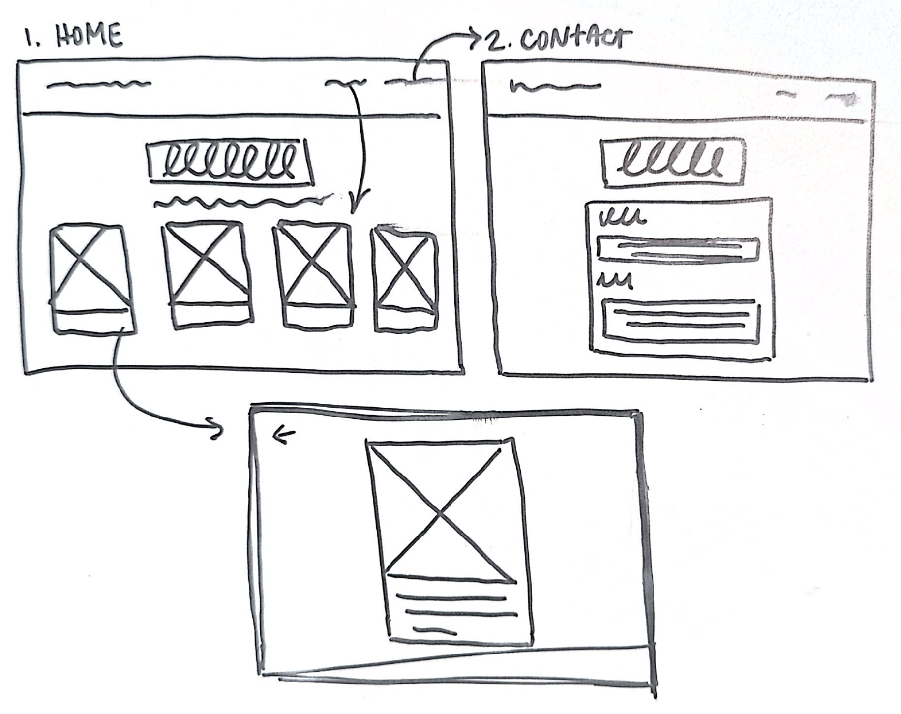
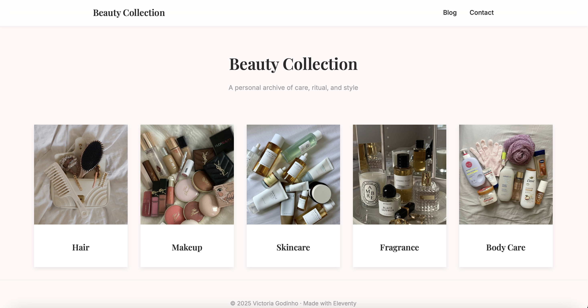
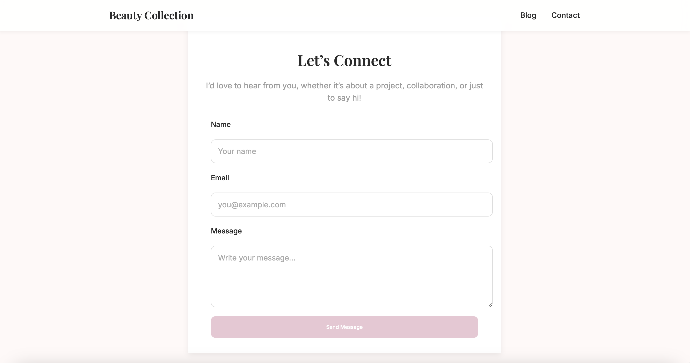

A responsive editorial platform exploring how digital beauty content can feel immersive, readable, and engaging. Designed to balance editorial aesthetics with navigational clarity and long-form reading comfort.
View Live ProjectA short walkthrough of the Beauty Blog layout, smooth scroll, and interactive transitions.
Beauty Blog is a responsive editorial web experience focused on readability, visual pacing, and immersive content consumption. It uses clear navigation, typographic hierarchy, and image-led content to create an experience that feels personal yet polished, similar to a digital beauty magazine.
The project explores how beauty content can move beyond product-focused presentation and become a more reflective, editorial experience. I wanted the site to feel visually refined while still being easy to scan, navigate, and read across different screen sizes.
The interaction pacing, spacing, and content structure were designed to support slower browsing and encourage users to engage with the content rather than move quickly through dense information.
I created low-fidelity wireframes to define the structure of the experience before focusing on visual styling. The sketches helped me establish information hierarchy, navigation patterns, content grouping, and the relationship between the home and contact pages.
This stage also helped me think through how the layout could translate into a flexible responsive system while keeping the content easy to scan and visually balanced.

Mapping page hierarchy, navigation, content cards, and responsive layout decisions before moving into visual design.
After establishing the page structure, I translated the wireframes into a responsive layout using a flexible grid system. I refined spacing, content proportions, and card sizing to maintain a clear hierarchy across different screen sizes.
Typography and visual styling were then layered onto this structure. Serif headlines create an editorial tone, while clean supporting text improves readability. Soft contrast, neutral tones, and generous whitespace help reduce visual noise and keep attention on the content.
The final system balances visual identity with function: imagery provides personality, typography establishes hierarchy, and the responsive layout keeps the experience consistent across devices.
This project strengthened my understanding of how much of a polished interface depends on decisions made before visual styling begins. Starting with hierarchy and layout gave the final typography, imagery, and spacing a clearer structure to work within.
It also helped me think more intentionally about responsive design as part of the experience rather than as a final technical adjustment. If I continued developing the project, I would test the mobile reading experience more extensively and explore how users move between editorial categories and longer-form content.
The final interface translates the early hierarchy and layout decisions into a polished editorial system focused on readability, visual consistency, and responsive behavior.

Home Page — Editorial card layout and visual content hierarchy.

Contact Page — Maintaining the same typography, spacing, and visual system across secondary pages.